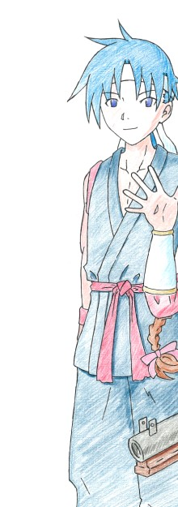
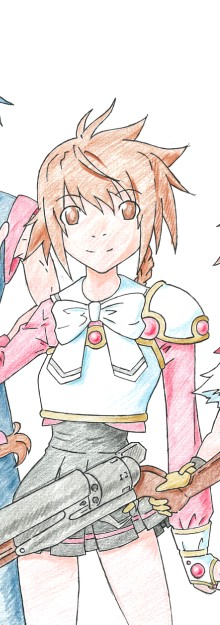
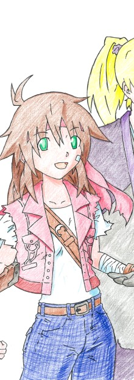
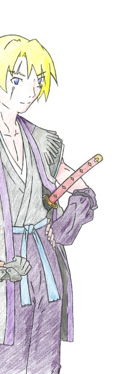
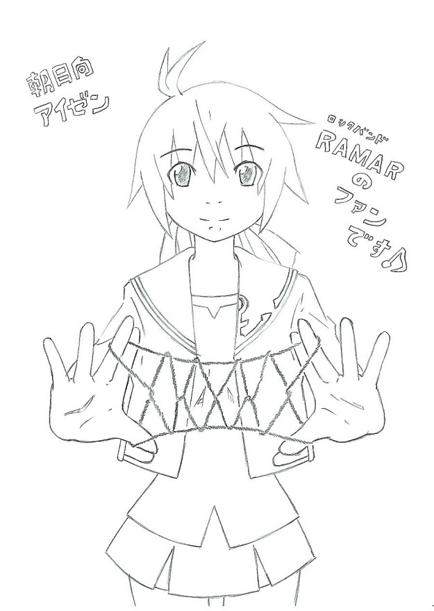

|
ウォーリアー・ガール
『番外編 − それは月影の中へと 後編』
『エピソード６ アイゼン ザ・ウォーリアー・ガール 後編』
中学校校舎に突然現れた、巨大なクモの巣。
それに触れた瞬間、巣の内部に引きずり込まれてしまうと言うトラップも施されている。
そんな中、アイゼンは、調律師として出撃する。右手には１梃の銃を携え、心強い味方として、葉助、そして綾瀬と共に。
そして、消防のひとりがこんなことを言い出した。
「サラダオイルを防護服にかけるのはどうでしょう？ そうすれば、クモの巣にも引っかかりませんよ？」
「成る程な！ よし、コンビニやスーパーで買えるだけ買って来い！ コンビニなら、各チェーンのブランディング商品の方が安いぞ！」
「それと、クモの巣の硬さですが、あのスパイダーマンの映画みたいに鋼のように硬いことが分かりました。斧やノコギリで調べてみましたが、みんなトラップに持っていかれました」
「使えねぇなノコギリ！ よし、ここはバーナーで行こう、いくら硬いっていったって、有機物は必ず燃える！」
「自衛隊にも連絡を取って、部隊をひとつ貸してくれることになりました。中に閉じ込められた人の救出は彼らに頼みましょう」
「よし！ では我々は、残された学生諸君を全力で保護する！ 自衛隊到着まで待機。総員、配置につけ！」
……現場を指揮する警官、かなりの熱血かつ仕切り屋である。
一方、アイゼンと綾瀬は。
銃をキーチェンジし、光の刃でクモの巣やドアなどを切り刻み、道を開いてゆく。ほんの少しでもクモの巣に触ればアウト。ふたりは、慎重に前へと進む。
「しかしさ、朝日向。敵の居所、ちゃんと分かってる？」
「はい？ 分からへんから探しとるんやないの。アホちゃう？」
「アホはお前だと思う。ちゃんと見当をつけてから探せって」
「やかましいなーもぉ〜……」
アイゼンたちが進むのは、「二」の字に並んだＡ棟とＢ棟のうち、裏口側にあるＢ棟。その昇降口から進入し、階段を上り、４階の特別教室エリア付近にいた。
「しっかし…… もし、敵が見つかってもさ、こう狭くちゃ戦えないよな。何でこうも狭いのかな。やっぱあれか、学校は戦う用にはできていないんだよな」
「当たり前やない。学校は勉強するところであって、だれかれ構わずケンカを吹っかけていいところとちゃう。敵を見つけたら、戦わずにまず逃げて広いところに誘い出す。まぁ、剣道やバスケなんかのスポーツは、体育館で試合とかするけ、ど……」
そこまで言って、アイゼンは立ち止まり、黙った。
そのアイゼンの後ろ側を歩いていた綾瀬は、突然立ち止まったアイゼンの背中に、ドンとぶつかる。ふらついて、思わず尻餅をつきそうになる。
「うぉっとっと。何なんだよ、朝日向、急に立ち止まったりして？」
「ちゃう。うちらから敵陣に乗りこむんやのぉて、うちらから敵をおびき出せばええんや」
そう言って、アイゼンは再び、廊下を進み始める。
「おびき出す？ どうやって？」
「まぁまぁ。ついてきて」
そしてアイゼンがたどり着いた場所。
そこは、校舎の東側にある、体育館だった。
空中廊下を渡り、ドアを切り裂き、フローリングの体育館の中央までやってくる。
体育館の天井を見てみれば、そこもクモの巣でいっぱいだ。
「綾瀬くんはうちの背中を守って。全方位、絶対に見逃したらあかん」
「おっけー。ここに敵をおびき出せばいいわけだな。で、どうやって？」
「そんなもん、簡単や。こうすればええねん」
アイゼンは、シュティンムガーベルをキーリセットし、銃の形態へと戻す。そしてすかさず銃の銃口を体育館の天井に向けると、迷わず引き金を引いた。
外では。
自衛隊が駆けつけ、いよいよ突撃しようとしていた。
突撃、および閉じ込められた人々の救出は自衛隊が任され、その隊の隊長が、号令を下そうとする。自衛隊の隊員は、防護服も武器も、サラダオイルでべとべと、ぬるぬる状態だ。
「ただいまより状況を開始する。全隊、前……」
その時だ。
体育館の天井が爆発したと思ったら、轟音と共に、光の筋が、空に向かって伸びていった。
何が起こったのだろう？ 自衛隊員、消防隊員、警察官、そして学生たちは、目を丸くしてその光景を見つめていた。
「が…… ガス爆発？」
「それはないと思うが…… とっ、とりあえず、全隊、前へぇぇぇぇぇぇっ！」
そして、体育館では。
アイゼンと綾瀬の前に、ひとつの人影、と言うより、その人影を包み込む闇が現れた。
「あんたがこの学校に巣を張った張本人やね？」
銃と拳をそれぞれ構える、アイゼンと綾瀬。
そんな彼女たちに、闇に包まれているかのような漆黒の人影は、背筋がゾッとするような声で答えた。
「然様。目的のひとつは貴様、朝日向アイゼンだ」
「うちやて？ しかも、目的のひとつやて……？」
「貴様は、人間にしては数少ない、オラクル・ネットワークに属する者。それも、そのあたりの妖怪よりも強い霊力を持つ。その貴様を取り込めば、凄まじき力が手に入るに違いない」
「もうひとつは？」
「ふふふ…… 人間は美味いからな。先ほども、食せば美味そうな女子が罠にかかってきてな、今から食欲が抑えきれぬ……」
「そう。分かりやすすぎる悪霊の手本やね、妖怪……『土蜘蛛』！」
アイゼンは敵の名を口にする。そして敵は、アイゼンのその言葉を否定しなかった。
「ほう？ 調律師、我輩の名を知っているとは」
すると闇の中から、緋色の８つの眼が、アイゼンたちを向いた。
そして闇の中から現れる、敵の正体。頭にはクワガタムシの角のような鋭いあごを持ち、左右には４対８本の足が現れる。ラグビーボールのような形状の尾は、頭や胴体よりもはるかに大きい。そして全身を被う殻は、黄色と黒の２色にカラーリングされている。全長、およそ１０メートル、かなり大きい。
だがアイゼンは、正体を現した土蜘蛛にひるむことなく、銃口を向け、言った。
「うちの言うことを聞いてくれるとは思えへんけど、とりあえず言ぅてみるな。命が惜しかったら、今すぐここを出て行き。然もなくば、うちが調律師としてあんたを葬らなあかん」
アイゼンのその言葉に、土蜘蛛は鼻で笑い、返す。
「葬るだと、この我輩を？ ハッ、口だけは達者だな。調律師とはいえ、貴様のような小娘に何ができる？」
「できるで。うちは、たったひとりで戦っとるんとちゃう、ごっつ強い相棒がおるさかい、あんたのような食欲だけの能無し妖怪、相手にもならへんで！」
そして、戦いは始まった。
アイゼンが銃撃を１発。だが、土蜘蛛の殻は硬く、銃撃だけでは小さな亀裂を入れるのが精一杯。だが、アイゼンが２発、３発と撃ち、殻に穴を開ける前に、土蜘蛛がアイゼンに反撃する。
「そんなものが効いてか！」
「ちっ！」「おわっ！？」
左右に回避する、アイゼンと綾瀬。
アイゼンは空中に大きく飛びのくと、床を側転で転がり、両足で立ちなおすとすかさず、体の支配を葉助に預けた。途端、シュティンムガーベルもキーチェンジし、銃の形態から刀の形態へと姿を変える。
「《ここから先は拙者がお相手いたす！》」
じゃきっ、と銃身が鳴る。そして葉助は銃を左脇に構え、凄まじい速度で敵への距離を縮める。一方の土蜘蛛は、４対の足でまるで戦車のキャタピラのように体育館の床を踏み鳴らし、その場でゆっくり回転しながら葉助の方を向く。
「ただ噛み千切るだけが我輩の能と思うてくれるな！」
クモは普通、尾から様々な種類の糸を出す。獲物を絡め取る、粘性が強くもろい糸と、巣を支え、自身が歩き回れるほど強靭な糸が主だ。だが、この土蜘蛛は、あごを大きく開くと、口から白い物体、巣に張る糸を葉助めがけて発射してきた。
「《くっ！》」
葉助は当たる寸前のところで捌き、更に距離を縮める。そして土蜘蛛の行動を奪おうと前足を切ろうとしたところで、土蜘蛛は尾から体育館の天井に糸を張り、空中に舞い上がることで葉助の攻撃を回避してしまった。
「《なっ！？》」
「言うたであろう、お前などに我輩は倒せぬ！」
「どうやろな！」
体の支配をアイゼンが取り戻し、銃をキーリセットして銃撃。それは土蜘蛛の頭部に当たりはしたが、土蜘蛛が空中でゆらゆら揺れて照準が合わせづらく、光の銃弾を同じところに当てられない。
残り２発だった銃弾を使いきったアイゼンは、銃を開いてクリップにつながれているブランクカートリッジをまとめて排莢、胴着の袖に隠してある新たなるカートリッジを取り出す。だが、アイゼンがそれをシリンダーにリロードする前に、土蜘蛛は空中から粘性のある糸を吐き出し、それをアイゼンに浴びせてしまった。
「わぷっ！？」
体育館の床に叩きつけられたアイゼン。しかも、銃を持つ右手と、６発分のカートリッジを持つ左手が離されたまま、大の字で床に粘着されてしまった。身動きが取れないアイゼンの傍らに、土蜘蛛がそっと降り立つ。
「やはり未熟なようだ、調律師よ。たとえ剣術に秀でていても、得物たる銃の扱いが未熟であれば無意味なこと。さあ、観念して餌食となり、わが力の一部となれ、未熟なる調律師よ……」
大きくあごを開く土蜘蛛。
この絶望的状況にあらがい、まだ戦おうとするアイゼン。
何とかこの糸の呪縛から逃れようとするが、手足がまったく動かせない。
「未熟で、どうも、悪ぅ……」
だが、アイゼンはこんな危機的状況でも。
「ごんざんした、ね！」
容赦なく、悪態をついた。
「死ね、調律師！」
すると。
その土蜘蛛の右側頭部に、黒い影が、ぶつかってきた。
「えっ……？」
アイゼンがそちらに顔を映すと、そこには人のシルエットを持つ、細身で小柄な鬼がいた。
そしてその鬼は、右回転に乗せたハイキックで土蜘蛛の側頭部をえぐったのだ。
「お、鬼……？」
いや、正確には鬼ではないようだ。
鬼と思わしき者のいでたちは、質素な衣に、虎の毛皮でできた靴、獣の牙や木でできたビーズをつないだアクセサリーをまとい、首にはやはり虎の毛を編んでできたマフラーを巻く。額には刺青か紋章のようなアザがあり、髪は長くつややか。そして、その鬼と思わしき者は、アイゼンを床に粘着しているクモの巣を、力強く剥ぎ取った。
「よぉ…… 無事か、朝日向？」
「そ、その声…… あなた、鬼だったの……？」
右手に銃、左手にカートリッジを持ったまま、アイゼンは呆然として、鬼と思わしき者の顔を見上げた。
「ねぇ、綾瀬くん……？」
「ああ。ま、隠すつもりはなかったんだが、言う機会がなかっただけだな。オレは人間じゃねぇ。よく言われるが鬼でもねぇ。オレは」
映画で見る、ブルース・リーの構え。
それを、鬼と思わしき者、綾瀬は取った。
「多摩川の守護神、河天狗のせがれ、綾瀬洋平だ！」
そして、アイゼンと綾瀬は、共に地を蹴り、双方から土蜘蛛へと攻撃を仕掛ける。
「天狗だかなんだか知らんが、我輩の敵ではない！ 貴様も共に食ろうてやる！」
「この河天狗を食うとは、罰当たりなヤツだぜ！」
綾瀬は真正面からパンチを繰り出す。だが、土蜘蛛は再び空中に回避、ふたりの攻撃の範囲が届かない空中から、粘性のある糸を吐き出す。だが、今度はアイゼンの銃にカートリッジがフルロードされている。アイゼンは落ち着いて、粘性のある糸を狙った。
「同じ手は通用せぇへん！」
弾き飛ばされ、ベチャッと音を立てて床に広がる糸。だが、土蜘蛛も攻撃の手を休めない。
「ふははははは！ 貴様等の攻撃が当たらねば、この我輩を倒せんぞ！」
「言ぅたやろ、同じ手は食わん。それに、当たらへんのやったら、地面に叩き落せばええねん！」
アイゼンが放った銃弾。それは、土蜘蛛がぶら下がっている、土蜘蛛と天井をつなぐ糸に、見事命中した。
糸は切れ、土蜘蛛を空中に吊っている支えがなくなる。そして土蜘蛛の巨体は、ずしんと音を立て、体育館の床を叩き割りながら沈んだ。その際、４対ある足の何本かが折れて弾け飛び、引き裂かれた関節からは紫色の体液がドロドロと流れ出ている。
「はっ、ザマぁねぇな。散々でけぇ口叩いといて、この体たらくたぁ、笑わせるぜ」
「こ、この、天狗ごときが……！」
土蜘蛛は再びあごを開き、綾瀬の足めがけて糸を吐き出そうとする。だが、その前に綾瀬はその強靭な脚力をもって飛び上がり、空中で翻って土蜘蛛の左うしろに静かに着地すると、落下の勢いと地球の重力に任せ、握ったふたつの拳で、土蜘蛛の尾を叩き割ってしまった。
「うぐぉぉぉぉぉぉぉぉぉぉぉぉおおおっ！？」
綾瀬の拳によって尾は叩き割られ、体液、体組織のほか、白いドロドロとしたものがあふれ出す。見るも無残で、むごたらしい光景ではある。だが、人を食らおうとした者だ、容赦はできない。
「ぐぇ…… 両手がべとべとだぜ、いろいろなもん混ざって」
これで、土蜘蛛から糸の放出を封じることができた。
尾が叩き割られた苦痛にうめく土蜘蛛の頭部に、アイゼンはシュティンムガーベルを向けた。
「ちっ、調律師……！」
「おおきになぁ、土蜘蛛ぉ。うちに銃の扱いを教えてくれて。これでひとつ、実戦を通じてうちは強ぉなったわけや」
アイゼンのその目に、情けのかけらもない。
土蜘蛛はただ、恐怖に震えるだけだった。
とどめを刺され、消滅しようとしていることへの。
「よーぉ反省し。地獄で、たぁーっぷりと……」
アイゼンは迷うことなく、引き金に指をかけ、そして引いた。
その瞬間、平穏をもたらす、福音が響き渡る。
その日。
土蜘蛛の消滅によって学校中から糸が消滅し、バトルによって傷ついた体育館は使用禁止にされた。授業も行われることなく、学生たちは全員帰され、土蜘蛛に捕獲されていた職員や学生たちも無事保護され、彼らは検査入院されることに。
そんな中、学校で食べるはずだった弁当を、アイゼンと綾瀬は近くの公園のベンチに座って食べていた。公園は大して広くなく、遊具は滑り台と子供用ジャングルジムだけというもの。
「それにしても、綾瀬くんが河天狗やったなんて、驚きや」
「ああ。こっちには、修行と嫁探しの両方を兼ねて来ていたんだ。ま、お前のことが好きになっちまったから、修行どころじゃねぇけどな」
「そないな大事なことを軽く言う人の言葉なんて信用できひん。まぁ、綾瀬くんのことや、好き、言ぅても友達レベルやろ？ しゃーないから友達でならいてあげるさかい、花嫁さん、早よ、見つかるとええね」
そう言って、アイゼンはロールキャベツをついばむ。そしてもぐもぐと租借している間、次に食べるつもりの、ごまかけご飯を橋でつまんでいた。
だが、そんなアイゼンの横顔を、残念そうにため息をついて、綾瀬は見つめていた。
「お前、本当に残念なヤツだな……」
「何がや。何が残念や」
「オレが言ってる花嫁は、お前のことだ。お前のことは友達としてじゃない、本気で好きだって言いたいの、っつか言ってんの」
「あー、はいはい。いわゆる厨弐病っていうやつね、って…… ………… ………… ……うん」
アイゼンは箸を置き、シュティンムガーベルの銃口を、綾瀬のあごに突きつけた。
「冗談もそのあたりにせぇへんと、頭吹っ飛ぶで！？」
「おいおい、物騒な…… あのな、朝日向」
綾瀬はアイゼンの銃をそっとそらし、ベンチの上に置かせると、いつになく真面目な顔で、アイゼンに言った。
「こんなこと、冗談なんかじゃ言えるわけねぇだろ？」
「そ、それって…… あ、あの、綾瀬くん？」
「ああ。今すぐに答えよこせとか言わない。まぁ、近い方がいいけど」
そう言って、綾瀬は弁当箱をたたみ、かばんの中にしまった。
そしてまた、綾瀬は、アイゼンの顔をそっと見つめる。
「な…… なんでうちのことなんて？」
「さぁな。好きになっちまったんだから」
そう言って、綾瀬はアイゼンの首にそっと腕を回し、引き寄せて。
「しゃーねーだろ？」
アイゼンが作ったロールキャベツの味を、味わっていた。
そして。
公園にひとり、ぽつんと取り残されるアイゼン。
綾瀬はいつの間にか、ベンチを立ち、公園から去った後だった。
そして、人生における記念を奪われてしまったアイゼンは、
しばらくして、空を引き裂かんばかりの声で、こう叫ぶ。
……この卑怯者、と。
『エピソード７ 想いの行方』
東京、渋谷区。
料亭、『恋桜』。
アイゼンたちは、店の入り口側の個室を用意してもらっていた。
畳の上に座布団を敷き、隣の部屋とはふすまのみで仕切られた席には、アイゼン、モニカ、颯、そして綾瀬の４人がいた。
巨大な丸太を斜めに切った杉の木の板を使った、楕円形のテーブルには、色とりどりの和食が並べられていた。マツタケのお吸い物、ほかほかのご飯、焼き鮭、豆の煮物、しょうがと鰹節がまぶされた冷奴、お新香といった具合だ。
だが、これほどの料理を前にして、アイゼンの箸は進まない。当たり前だ。
——何でやねん、何でやねん！
——何でこんなやつと、一緒にご飯食べなあかんのや！
そんなアイゼンの気持ちとは裏腹に、綾瀬はモニカと颯と話を盛り上げていた。
「へぇ、綾瀬くんって、天狗だったんだぁ」
「僕も驚きだよ。きみのような若い子が、川の守り神とはね」
そう言ってそれぞれの食事をついばんでゆくモニカと颯に、綾瀬は返す。
「いえ、オレはまだ修行中の身です。今も全国を回って、いろんな土地神様に指導を受けてもらって。あ、でも奈良に行ったときは、ちょっとそれどころじゃなかったなぁ、なんて」
「奈良？ それって、アイゼンの出身地じゃない。ねぇ、綾瀬くん。奈良県には土地神様はいなかったの？」
「いや、どこにも土地神様はいるよ。ただ、オレは修行と平衡して、花嫁探しもしていたんだ。オヤジからの言いつけってのもあるんだけど、オレだって恋のひとつくらい、してみてーじゃないすか？」
「でっ！」
アイゼンが、唐突に叫んだ。
「その恋にうつつを抜かして修行をサボって、奈良県での修行はどないなってもうたん！？」
「いやー…… 見事に忘れてた。で、奈良県の滞在期日が過ぎるじゃん？ ほんとだったら引っ越してすぐやんなきゃなんない挨拶も、期日が終わった後にやっちまったもんで。奈良県の神様は温和な方だったからよかったけど、修行を怠ったのはまずかったなーって、一応は反省……」
「そういうことを言いたいんとちゃう！」
箸を乱暴に置くアイゼンに、モニカも颯も慌てふためく。
「花嫁や。結局あのあと、手紙一通学校に送りつけて、おらんようになってもうたやん？ そのあと、どないなった？ うちはな、いろいろ振り回されて、冗談半分に好きだとか言われた挙句、ファーストキスまで奪われ、返事もせぇへんうちにおらんようになって、あれからずっと怒ってんねんで！ どう責任取るつもりや、人の心、もてあそんどいて！」
その言葉に、モニカと颯は、ポロッと箸を落とし、フリーズしてしまった。
——あ、アイゼンが、純情なアイゼンが……！
——綾瀬くんと、キスだって……！？
怒り狂うアイゼン、呆然とするモニカと颯。
だが、綾瀬の態度はいつもと同じ。
２年前から変わらず、飄々としたものだった。
「オレが好きになったヤツは、お前以外に誰もいねぇよ」
その言葉に、アイゼンの言葉は止まる。
そして、綾瀬は続けた。
「２年前のあの時、正直なことを言うとな。オレは、いつも無口で無愛想なお前を、ただ笑わせたかっただけなんだ。友達といると楽しいぞ、笑顔になると心が軽くなるぞって、ただそれだけを教えたかったんだ。
オレが奈良を去る最後の日まで、結局お前は笑ってくれなかった。でも、お前はオレの言葉に、いつも真正面から返してくれた。うれしかったぜ？ 感情をどこかに忘れてきてしまったようなお前が、オレとだけはいつも対等に話し合ってくれた」
「そ、それは……」
アイゼンは箸を持ち直し、しかし料理に手をつけることなく、宙で遊ばせている。
「そのうちな、オレはお前といるのが楽しくなってきた。たとえ笑ってくれなくても、無愛想でも、ちゃんとオレとは面と向かって話をしてくれる、お前が好きになってた」
「……そんなもん？ もうちょっとちゃんとした理由あれへんの？ なんでうちなん。うちなんて、パッと見ぃ地味やし、それにあの時は、周囲に分厚い壁を作って自分を守っとった」
外見のこととなると卑屈になるアイゼンだが、それ以上に２年前のアイゼンは、人と接しなかったという部分がある。
それでも、綾瀬はアイゼンに、微笑を崩さず返す。
「その壁をオレがぶっ壊した。そしてそれにお前は、今まで気付いてないだけなんじゃねーの？」
「え……？」
「オレな、分かったんだ」
綾瀬は、冷奴の上にしょう油を少しかけ、それを箸で均等に４等分する。そのうちのひとつをついばむと、遠くを見るようなまなざしで、アイゼンに返した。
「アイゼンはきっと笑顔が似合う、そう思って接してきた。けど、もうひとつ重要なことを、オレは見落としてた」
「重要な、こと……？」
綾瀬と同じように、冷奴をついばむモニカと颯。相変わらず、アイゼンの箸は進まない。
「土蜘蛛が学校を襲ったあの日、お前は銃を手に、調律師として勇敢に戦った。その時の表情を見て思ったよ。真剣なまなざしは、美しい。汗を流し、懸命に戦う姿は、何よりも輝いている。オレはそう思った」
「うちが、輝いていた…… あの時の、まだ駆け出しやった、荒削りやった、うちが……？」
「ああ。お前はいろいろ不器用だけど、何事にも真剣に向き合う姿勢、オレはそれに惚れてたのかも知れねぇんだ」
鮭の身をほぐし、ご飯と一緒についばむ綾瀬。とてもおいしそうだ。アイゼンも思わず、鮭を丸まる食し、そのしょっぱさに口をすぼめてしまう。
「だから今、改めて言う。朝日向、オレと結婚してくれよ」
東京、渋谷区。
料亭、『恋桜』。
その入り口側に位置する一室は、終始にぎやかだったと言う。それも、いろいろな意味で（隣の部屋の利用客・談）。
そして。
渋谷駅、岡元太郎の壁画『明日の神話』の前。
綾瀬は、イヤイヤながら携帯電話を取り出したアイゼンと、メールアドレスの交換を済ませた。
「じゃあな、朝日向。返事はいつでもいいぜ」
「つーん。どうせ答えは、２年前から決まっとる。おファッキン、や！」
「へへっ、期待してるぜ！」
鼻こすりをして軽く笑う綾瀬。
どうも、歴戦の調律師たるアイゼンでも、この軽い雰囲気の天狗にだけは敵いそうもない。
「おーおー待っとき。すぐにお断りってメール返すから。……それはそれとして」
アイゼンは携帯電話をしまうと、綾瀬に尋ねる。
「夕方の、あの事件。綾瀬くんも、戦ったら強いやん。綾瀬くんなら得意のジークンドーで一蹴できたんとちゃう？」
「ああ、あれか。たいした理由はねぇよ」
そう言って、綾瀬は右足を横に向ける。
「ピンチからの逆転！ その方が、かっけーだろ？」
「………… ……は？」
アイゼンにしては、間抜けな声。
そんなあっけに取られる、アイゼンをはじめ、モニカと颯に、綾瀬は右手の人差し指と中指をそろえてピッと宙をはじき、言った。
「んじゃ、オレはこの辺で。また会う機会があったら、よろしくっす」
それだけ言うと、綾瀬は回れ右をして、改札がある方へと向かってゆく。そしてすぐに、雑踏に紛れてその姿は見えなくなっていた。
取り残される３人。
だが、誰もが考えることを放棄している中、葉助だけが冷静に、この先の行く末を考え、言葉としてまとめた。
「《アイゼン殿には申し訳ないが、アイゼン殿には、あのくらい前向きで向こう見ずで悩みがなさそうな少年の方が、嫁ぐのに良いかと……》」
「黙れぇぇぇぇぇぇぇぇぇぇぇぇぇぇぇぇぇぇぇぇぇぇぇぇぇぇぇぇぇぇぇぇぇぇぇぇえええっ！」
渋谷駅。
岡元太郎の壁画『明日の神話』の前のホール。
アイゼンの絶叫が、こだました。
『エピソード８ メルヘンマジック』
東京都と神奈川県の県境に位置する町。
東京都、トコローズヴィル。
アイゼンはひとり、その町を訪れていた。
「以前来た時と、えらい雰囲気違うなぁ〜……」
確かにその町は、人が暮らすには申し分ないくらいに整った町だ。昔も、今でも。
ただ……
「トコローズヴィル、いつの間にこんな緑あふれる町になってもうたん？ 町長さんの意向？ まぁ、緑あふれる町は素敵やと思うけど」
そう、この町のいたるところに、謎の草木やツタが生えている。人の家の庭や道路わき、民家の壁やビルの壁、電柱、商店街の門や屋根、ガードレールなどなど。もともと街路樹として植えられている木々は、コンクリートを叩き割るほど著しく成長を遂げている。
——やっぱ違うか。人が管理できひんくらいに、植物の方が成長したんや、短期間のうちに。
——じゃあ何で？ 植物の成長促進剤のようなもんでも散布した？
——それとも、自然を愛する妖怪のおせっかい？
——何でもええけど、町の人が迷惑してなきゃ、まぁええか。
だが、アイゼンは知らない。
この町に住まう天才…… もとい、『天災』科学者によって、日々、何かしらのトラブルが引き起こされていることを。また、その科学者によるこの町の被害は、この植物の急成長だけではないことを。
アイゼンの目的地。
軍事基地を小さくしたかのような建物。
「うん、地図の上では間違いあらへん。けど…… 何でたった１年で、建物の様子がこうも変わるかな？ 以前来たとき、ここって水車小屋風やったよね？」
そして、この家の看板もまた木になる。
……ではなくて、気になる。
『アトリエ・メルヘンマジック』
『わたりどりハウス』
『所常時科学研究所』
『住民：所常時 インディー 卯月モモ』
うん。
間違いない。
「間違いなく、メルヘンや魔法とはかけ離れたおうちやなぁ〜……」
とりあえずインターホンを押す。
すぐに現れたのは、灰色の髪の少女。ぶかぶかサイズのＴシャツに女の子用ジーンズ、赤い首輪に、ギターのピックを模したタグを首に巻いている。１０歳程度の女の子だ。
「お待ちしてました、アイゼンさん！」
「お久しぶり、インディーくん。はい、これ、この前渋谷に行ったときのお土産や」
にこやかにアイゼンを出迎えた少女。彼女の名はインディー。もともとは人間ではなく、シベリアンハスキーという種類の犬だった。だが、先述の天災科学者にしてマルチタレント、またこの家の主でもある所常時が発明したメカによって、なぜか、こんな姿になっている。
「うわ〜！ ありがとうございます！ 楽しみだなぁ、何が入ってるんだろ。……そうだ、モモさんに会いに来たんですよね。どうぞ上がってください」
「うん、お邪魔します〜」
建物の構造は、３階建てになっている。
１階は、『所常時科学研究所』。一般人にとっては、何に使うのかまったく予想できない機材が山と積まれている。ただの鉄くずから、完成品まで、様々な発明品が所狭しと積み上げられており、オイルやほこりのにおいが充満している。たまにそこで食事もしているのだろう、電気ケトルやホットプレート、小さな冷蔵庫まである。ほかには、あまりにわけの分からないフィギュアやプラモデル、アコースティックギターやミュージシャンの写真も飾ってある。フィギュアなどはたいていミリタリーものだ。
２階は、芸能関係の事務所『わたりどりハウス』。インディーはここに所属するタレントである。そして今も、スーツに身を包んだ芸能関係の人が訪れていた。ほかにも、個人の部屋をのぞく一般家庭の設備がひと通りそろっている。電機とガスの両方が使えて収納も多いシステムキッチン、その奥のほうにトイレとお風呂といった具合だ。アイゼンを家の中に通したあと、インディーはその事務所の中に消えてゆく。
そして３階こそ、アイゼンの本当の目的、漫画アトリエ、『アトリエ・メルヘンマジック』。アイゼンは階段を上りきった先のドアを２度ノックすると、「お邪魔しま〜す」とひと声かけ、そっとドアを開く。
メルヘンマジックの内部構造は、道路側（南側）が寝室、奥（北側）がアトリエという風になっている。そのアトリエには、机が５つ。大きな本棚には、漫画や小説のほか、資料と思われる図鑑や神話の本などがたくさんある。画材は、それぞれの机にきちんと整理整頓されていた。
「すみませ〜ん、モモちゃん、いますか〜？」
だが、返ってくる返事はない。
仕方なく、アイゼンはアトリエの方をのぞくことに。すると。
一番奥の机で、モモがよれよれのパーカー姿で、死んだように伏せていた。
「モモちゃん！？」
アイゼンは駆け寄る。
——まさか、漫画の締め切りとの戦いで精根尽きてもうたとか！
——せやったら、こんなところでぐでーんとしとる場合ちゃう。早よ、ベッドに寝かせて栄養のあるご飯を……
そうアイゼンが思っていたら。
「ずぴ〜…… はぅ、もう食べられませ〜ん……」
のんきな寝言。
これには、アイゼンも床に頭を打ち付けてしまう。
アイゼンの訪問で目を覚ましたモモは、「そうだ、やっと原稿上がったんだ……」と言って、電気ケトルでお湯を沸かし、熱いお湯でコーヒーを入れた。モモは大量にシュガーを溶かし、アイゼンはブラックのまま、マグカップに口をつける。
「おおきに、コーヒーご馳走してもろて」
「ううん、たいしたおもてなしもできないでごめんね。……ところでアイゼンちゃん、今日は、何か用事があって来たんだよね。オラクル関連？」
モモのその言葉に、「あ、忘れとった」と言って、アイゼンは床に置いていた手提げ袋を手に取る。
「昨日、モニカと颯さんと一緒に渋谷に行ったから、インディーくんのと合わせて、そのお土産。駅構内で売っとる東京銘菓『ひよたま子』と、マルキューで見つけたモモちゃんに似合いそうなワンピース。もしよかったら」
「へぇ！ ありがと、アイゼンちゃん。ひよたま子かぁ、一度食べてみたかったんだぁ！」
モモはアイゼンから手提げ袋を受け取ると、それらを取り出した。ひよたま子の箱は縦横に大きく、十何個か入っていそうだ。白ベースにひよこのイラストのパッケージが特徴的。
次に取り出したのは、ピンク色のワンピース。肌触りがよく布地もしっかりしている。一緒にストールも入っており、淡いベージュにほんのりライトピンクのラインがにじんでいる。光にかざせば透けて見える薄さだ。
「うわぁ、きれい……」
「モモちゃん、魔法少女の衣装って桜を意識しとるやん？ せやから、普段着でも桜や桜色に近いもんを、思て。どうかな、気に入ってもらえたら、うれしいな」
おっかなびっくり、そんな感じで言うアイゼン。だが、モニカは表情をほころばせながら、アイゼンに返した。
「とってもうれしい。ありがと、アイゼンちゃん」
胸の前で、ワンピースをきゅっと抱きしめる。そんなモモのうれしそうな表情に、アイゼンもにっこりと微笑んだ。
《喜んでもらえてよかったでござるな、アイゼン殿》
〈うん。葉助が協力してくれたおかげや〉
そしてアイゼンが、ブラックのコーヒーを飲み干し、帰ろうと席を立つと、モモが彼女に言った。
「そうだ、アイゼンちゃん。最近、漫画の資料のために和服を買っちゃったんだけど、何かの手違いで同じものが２着来ちゃったの」
「えっ？ あ、はぁ……」
足を入り口側に向けようとするアイゼンだが、モモの言葉に、向き直る。
「それでね。よかったら一着貰ってほしいんだ。わたしとアイゼンちゃんって体格同じくらいでしょ？ あー、まぁ、胸のサイズは負けるけど」
——お、おぉ……！
——うちが勝てる人、ここにおったぁ！
胸のサイズで。
「えっと、ほんまにええの？ 和服でしょ、高かったんとちゃう？」
「そりゃあねぇ。でも、返品するのも手続き面倒だし、アイゼンちゃんなら似合いそうだし」
「ええの？ 本気にしちゃうよ？」
「もちろん！ 今すぐに用意するから、待っててね。……あ、それと」
モモはアイゼンのそばを通り過ぎ、寝室に向かおうとするが。
「その和服と、ほかにもいろんな衣装があるんだけど…… 時間があったら、写真撮影とか頼まれてくれないかな、今後の漫画作りの資料のために」
アイゼンは快諾した。
写真撮影はたいてい、軍事基地風のこの家の、屋上で行われる。そのため、機材は屋上に設置された物置の中にある。主な撮影機材は、白熱電球型ＬＥＤライトを用いた照明、光を反射させ被写体を照らすリフレクター、カメラを固定するための三脚といった具合。また、物置は簡易更衣室としても使われる。
アイゼンがまず着たのは、もらったばかりの和服。純白の襦袢に、薄い桜色の着物、深い紫色の袴、そして靴紐で編み上げるタイプのレースアップ式の革製のブーツ。いつも青いリボンで結っている長い髪は、赤いサンゴの髪留めで固定された。
「えへへ、明治時代にタイムスリップしたみたい……」
「いいよーアイゼンちゃん！ そこでポーズ、クルッと回って！ ハイ次、竹刀を持ってバトルのポーズ！」
そのあと、アイゼンは何種類かの衣装に着替えさせられた。
注射器を持ったミニスカナース服、黒い銃を持つ殺し屋風、かわいらしいお嬢様風ドレス、サッカーユニフォーム、パンクロッカーが着るような装飾とダメージの酷い服、豪華な刺繍が施された海賊船長ローブ、ハーフパンツに革の鎧に剣といった少年勇者……
何度も着せ替えられ、何度もポーズを決めさせられ、アイゼンは疲れたが、案外悪い気はしなかった。そのため、モモが指定する服も嫌がらずに着、ポーズもノリノリで決めてゆく。
そして、「これが最後」といってモモが指定してきたのは。
「うわぁ、かわいい。これ、どんな設定の服？」
「次、出版社が即売会の企業ブースで出す同人誌で描く予定の魔法少女の服。着てみて？」
その魔法少女のコスチュームは、紺色のツーピースに獣の牙のビーズをあしらったブレスレット、赤い毛皮のベストに、同素材の腰に巻くタイプのローブ。靴は、木製のソールにベストやローブと同じ素材のアウターのブーツで、靴紐で編み上げて、更にベルトで固定するタイプだ。
「魔法少女……？ 最近アニメで見るような、ドレスや学生服っぽいのをアレンジしたヤツとは、違うみたいやね？」
「うん、ファンタジーを意識してみたんだ。その魔法少女も、戦う相手の敵も、絵本から飛び出して現実世界で暴れまくる、ってお話。で、このネックレスなんだけど」
最後にアイゼンが首に引っ掛けたのは、何かの紋章を閉じ込めたガラス玉を銀色の爪で固定したネックレス。アイゼンはその紋章入りのガラス球を右手で取り、まじまじと見つめる。
「現実世界の女の子が手にする変身アイテム。これを首に提げて呪文を唱えると魔法少女になって、ファンタジーのモンスターや悪の魔法使いを倒すことが出来るんだ」
「へぇ、面白そうやね。で、モモちゃんが書いたこの漫画が、同人誌になるんだよね？ 楽しみだな、協力しちゃうよ！」
撮影終了。
アイゼンとモモは、カメラの電源を切り、撮影機材を物置に片付けてゆく。まだ、アイゼンは幻想魔法少女コスチュームのままだ。
「お疲れさま、ありがとう、アイゼンちゃん！」
「こちらこそおおきに。こんなかわいい服が着られるなんて、うちもうれしいよ。あ、でもさすがにこれは街中ではねぇ」
「即売会ではコスプレをして参加する人もいるし、今度のイベントではそれを着て一緒に歩こうよ」
「それええね。ほな、今度の漫画イベントで、またこれ貸してね？」
その一方で……
１階・所常時科学研究所。
そこでは、白衣を纏い、メガネを掛けたひとりの男…… そう、マルチタレントにしてミュージシャン、所常時が、怪しく高笑いしていた。
「あーっはっは！ ついに完成したぞ！」
機材に引っ掛けて切り裂いたり熱で焼け焦げたりしてボロボロの白衣を纏い、手や顔にはすすや油汚れがついているという、散々な有様の常時が右手に持っているもの、それは。
「これぞ、『万能電子レンジ』！ 市販の加熱調理はもちろん、バナナも凍るマイナス３０度まで瞬間冷凍する機能つき。更に、取っ手の取れる鍋をそのまま放り込んで、揚げ物やカレーの煮込みやら、パンや納豆の発酵やらなんでもござれ。加熱はもちろん冷却もできる万能電子レンジならば、もはや一家に一台は常識となるであろう、ははははははははは！」
……誰もいない研究所にひとり、機能を説明して何の意味がある。
そこで常時は、早速電子レンジを使ってみることにした。
大きな鍋に、水を張り、肉や野菜を放り込み、ルーを放り込んだ。下ごしらえも何もしていないまま、カレーの具をすべて放り込んだ鍋を、常時は躊躇なく、電子レンジの中央に置いた。あとは、たったひとつ、『おまかせ加熱』のボタンを押すだけ。それ以外にスイッチが見当たらない。
「これで成功すれば、凝った一流料理もインスタント。さあ、実証して見せてくれたまえ、万能電子レンジ試作１００号くん！」
そしていよいよ。
ぽちっとな。
その日の夜。
フェルゲンハウアー低。
アイゼンはそこに帰ってきた。
「ハイハーイ。アイゼン、待ってたよ。トコローズヴィルでもお土産、買ってきたん、で、しょ……？」
途端、モニカは絶句する。
当たり前だ。
アイゼンは、あの幻想魔法少女のコスチューム姿で帰ってきたのだから。
しかも魔法少女のセオリーたる使い魔として、純白の羽耳ネコを肩に乗せている。
アイゼンは力なく笑い、そして言った。
「あ、あはは、あははははは……？ モニカ、これ、お土産や」
アイゼンが手渡したものは、トコローズヴィル名物、純銀メッキのピックタグ。おにぎり型のピック（ギターの弦を弾くための爪）を模した金属板に名前を彫り、それを銀が溶かされた液体に浸して銀メッキを施し、最後にチェーンや革紐など、好きな紐を通して出来上がり。ネックレスとしてだけではなく、キーホルダーや携帯ストラップとしても人気が高い。ピックには、『Ｍｏｎｉｃａ Ｆｅｌｇｅｎｈａｕｅｒ』と掘り込まれていた。
「えへへ。うちのと颯さんのもあるで？ みんなでおそろいや！」
「うん、ありがとう、大切に使うよ。それはそれとして、その格好……」
「ああ、これ？ この魔法少女の衣装？ これね、モモちゃんに、漫画の資料のための写真撮影を頼まれたんやけど、それを着替える前にモモちゃん家が爆発して…… インディーくんの事務所や、漫画のアトリエとかも、みんな崩れ去ってもうて」
そう。
あのあと、常時がボタンを押したその瞬間、万能電子レンジは爆発を起こし、研究所を吹き飛ばしてしまったのだ。更に、その研究所の上の階に位置する芸能事務所やモモのアトリエも崩れ落ち、たくさんの資料や道具や家財が、お釈迦になってしまった。
そのあと、常時は散々、奥さんや娘たち、芸能関係者、インディーに叱られた。だが、モモはあっけらかんとしており、「画材とアイゼンちゃんからのお土産が無事でよかった〜」と言って、無事な画材や漫画や資料と共に、お引越しの準備を始めていた……
一通りの説明をし、更にアイゼンはこう付け加えた。
「所さん家、しょっちゅう爆発を起こすから、町の人もモモちゃんもそれほど気にせぇへんみたい。まぁでも、所さんは懲りずに発明に取り組んで、そのたびに爆発させて、みんなに迷惑をかけて、家族の方々に叱られる、言うのを繰り返しとるみたいなんや」
「………… ………… ……反省って言葉を、知らないのかなぁ、男の人って」
もちろん、夢中になりすぎる男の人限定。
わけがわからないよ。こんなの絶対おかしいよ。
『コスプレだョ！ 主役集合』
   
アイゼン：ロディ・ラグナイト（ワイルドアームズ アルターコード：Ｆ）
モニカ：獅堂光（魔法騎士レイアース）
颯：結城晶（バーチャファイター）
葉助：名無し（ストレンヂア 無皇刃譚）
『エピローグ』
「《うわぁっ！》」
アイゼン、もとい葉助は、布団を勢いよくはいで起き上がった。彼の目は戦慄に満ち、頭から背中まで汗でぐっしょりと濡れていた。息は荒く、焦点は合っていない。鼓動も早く、唇も震えていた。
「《ここは……？》」
葉助は、アイゼンの眼を通して見回す。今、自分がいる場所は、柔らかい布団…… いや、ベッドと呼ばれる高床の寝台の上。羽毛をふんだんに使った毛布と枕、銀色の光沢を放つ絹のシーツ。天井から吊り下げられた、透き通る桜色のカーテンには、美しい朱鷺の柄が刺繍されていた。
部屋も広く、壁もライトブルーとピンクの壁紙で彩られ、品のいい模様が描かれている。本棚にはライトノベルやマンガがぎっしりだが、参考書や辞典、ノートもちゃんと種類別に管理されている。机の上にはノートパソコン。現在は閉じられており、かわいらしいデコレーションが施されている。
また、ベッドの上には７匹のネコがいる。ノルウェージャンフォレストの雄のハーメルンと、マンチカンの雌のフェルト。更に、そのすぐそばには、彼らの子どもがいる。かわいい子ネコたちの名前は、ネオン、フルート、バドル、ホイッスル、バラライカと言う。
「《こっ、ここは、モニカ殿のお屋敷……》」
——そうでござった。拙者は、モニカ殿のご好意に甘え、ここに泊まったのでござった。
——あぁ、モモ殿の仕事場にお邪魔して以降、どうも『崩落』が絡む夢ばかり見る。
葉助がこのごろ見る夢、それは。
せっかく建て直された鳥附荘の崩落、フェルゲンハウアー家の崩落、バトルステージにもなった東京スカイツリーの崩落、桜原高校の崩落。しかも、すべて爆発によるものである。
「《いい加減くだらない夢として片付けたいのでござるが、いかんせん……》」
——紙と筆は無事でも、モモ殿が丹精して描き上げた、確か『生原稿』というもの。
——あれが、見事にお釈迦になってしまって、拙者もとても心苦しく思うものでござる。
すると。
「……うにゃあ。おっはよぉ〜アイゼン」
寝ぼけた声が、葉助の右隣から聞こえた。振り向くと、そこにはまぎれもなく、艶めく栗色の髪を持つ少女、モニカが横たわっていたのだ。それも、ピンク色のランニングシャツにレディース用トランクスという格好で！
「《……なっ！？ もっ、モニカ殿！ 前にも申し上げたとおり、その格好は破廉恥もいいところでござる！》」
「何よ、前にもって。……成る程、今は葉助さんね。ふっふ〜ん、相変わらずウブだねぇ、葉助さんは。……おぉ〜、ハーメルンにフェルト、それにネオンたちも。いい夢、見られたかな？ 見たんだったら、その幸せをわたしにもわけてぇー♪」
頭を右手でポリポリ掻きながら、モニカは上体を起こした。おかげで、左肩から服がずり落ちて、ふくらみのふもとが見えてしまっている。
「《うっ……（アイゼン殿も少しずつ追いついて来ているはずでござるッ！） とっ、とにかく、何か羽織ったほうが、その……》」
「はいはい。葉助さんって相変わらずウブだねー。ま、そんなこと言うなら、自分のも見てみたら？ アイゼンってば、風呂上りにバスタオルのまま寝ちゃったから、結構刺激的だよ？」
葉助はその直後、血の海に沈むのだった。
アイゼンはフェルゲンハウアー邸で、モニカと一緒に朝のシャワーを浴び、颯自慢のグリル料理の朝食をご馳走になると、稠やメイドたちに見送られ、モニカとともにフィアット５００に乗り込む。
向かった先は、新しく建て直された鳥附荘。アイゼンはいつもどおりのセーラー服ではなく、モモからもらった桜の柄の和服に着替えてゆく。唇には真紅のルージュを塗り、サンゴの髪留めで髪をまとめて着替えを終え、和柄のメッセンジャーバッグに、財布や携帯電話、調律銃シュティンムガーベルなど荷物を詰め込むと、新しくなった仏壇の前に座り、水、お茶、お供え物を置いてゆく。
——お母さん。今日はモニカと一緒に、隅田川でスカイツリーと桜のダブルお花見や。オラクルのみんなはもちろん、ワイルドバンチのみんなや、クラスメイトも一緒や。いろんな意味で楽しくなりそうや。
手を合わせ、黙祷し、亡き母に報告する。そしてアイゼンはゆっくりと黙祷を解くと、最後に短く、一言口にした。
「……行っ、てき、ます」
アイゼンはそれだけ言うと、かばんをつかみ、そのまま部屋を飛び出してゆく。以前、アイゼンと共に家事に巻き込まれたことで少し焦げてしまった本尊は、それでも相変わらずやわらかく微笑み、アイゼンをやさしく見送る。
新しくなった鳥附荘は、以前と同じ木造２階建て。玄関のすぐそばに管理人部屋があり、部屋の前にはテレホンカードと硬貨で動く電話が新しく備え付けられている。キッチンや電子レンジ、お風呂、トイレがシェアなのは相変わらずだが、シェア回線のインターネットが追加されたため、住民はいつでもインターネットが使い放題。ほとんどのものがシェアで家具も少な目という不便さに、ちょっとだけ潤いができた感じだ。
「大屋さん、行ってきますーっ！」
管理人部屋でお茶をすすっている大矢に、アイゼンは声をかけながら走り去ってしまう。大矢が振り返ったときには、すでにアイゼンのまとう和服の袖と袴のすそがひらりと舞い踊って消えたあとだったが、彼はにこやかに、アイゼンの出発を見送った。
アイゼンが玄関で履くのは、モモからもらった和服一式に含まれていた、レースアップ式の革製のブーツ。草履ではなくブーツと言うところでアクセントをつけ、女袴の存在もあって、アイゼンは『女学生』の服装に着飾っていた。
勢いよく飛び出したアイゼン。風が彼女の髪を揺らし、袖と袴のすそをなびかせる。そんなアイゼンの目の前に、彼女を待っていたモニカと颯が、にこやかに微笑んでいる。
「かわいいよ、アイゼン！」
「うん、とてもいい」
「おおきに。それとお待たせ、モニカ、颯さん！」
「《いざ参ろう、約束の場所へ》」
- W a r r i o r G i r l --
S e e y o u n e x t f i g h t !

|